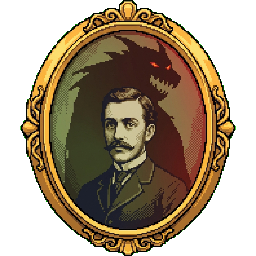
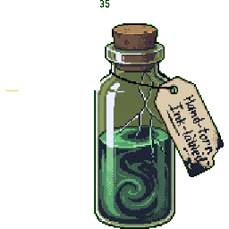
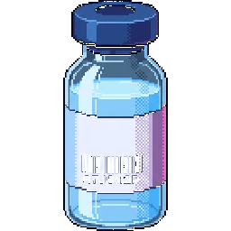
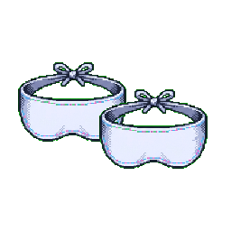
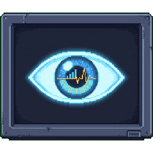
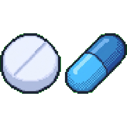

The Jekyll Protocol
You're shadowing Dr. Helen Jekyll — great-granddaughter of that Jekyll — as she runs a clinical trial in the same territory her ancestor blundered into with a serum and no plan at all.
Use → (or Next) to advance and to reveal points one at a time. F = fullscreen.

The Family Business
"Everyone assumes I went into medicine to make up for him," Helen says, nodding at the locket photo on her desk. "They're right."
- Her trial: an experimental drug for a severe impulse-control disorder — the same territory Henry Jekyll wandered into with a self-brewed serum.
- He had a hypothesis, a syringe, and himself. No committee, no colleagues, no one watching.
- She has all three, plus one idea he never had: a reason it's ethical to run the experiment on someone besides yourself, at all.
Before Rounds
Five gut-checks — no right answers. Just say where you stand; we'll revisit them at the end.
If a doctor is even slightly confident one treatment is better, it's wrong to randomly assign patients to either arm.
A drug trial without a placebo group can't really prove anything.
Once a trial starts producing promising results, it should be stopped early so everyone can get the better treatment.
It's fine to test an experimental treatment on yourself without any oversight, since you're only risking your own body.
Blinding — hiding who's getting the real drug — is mostly a way of tricking patients.
What a Clinical Trial Actually Is
Not "try something and see what happens." A trial tests whether an intervention beats an alternative, under a comparison built to survive your own wishful thinking.
- Henry's method: drink the serum, note what happens, done. One data point, one believer.
- A real trial is designed so the result would convince someone who wasn't already hoping for it.
Phases I–IV
Before a drug reaches the patients who might benefit, it climbs four stages:
- Phase I — is it safe, and at what dose? A handful of people.
- Phase II — does it show a real efficacy signal, and what side effects show up? A larger but still small group.
- Phase III — the big one: a large comparative trial against a control, deciding whether it's approved.
- Phase IV — after approval, ongoing surveillance for rare or long-term effects.

The Control Group
A comparison arm — placebo, or the current standard of care.
- Without one, you can't separate the drug's effect from the natural course of the illness, from regression to the mean, or from the placebo effect.
- Henry's serum "worked" — but compared to what? He had no one who took nothing, and no earlier version of himself to compare against fairly. Every "result" is confounded with everything else happening that night.

Randomization
Chance assignment to trial arms spreads both the confounders you thought of and the ones you didn't, evenly across groups.
- Sicker patients, healthier patients, optimists, skeptics — randomization makes sure none of them clump on one side.
- Henry's "trial" had an arm of exactly one. He was investigator, subject, and sole judge of his own results, all in the same body — nothing to randomize, and no one to compare himself to.
Two Ways to Compare
Chance decides who gets the drug and who gets the control — confounders scatter evenly across both arms.
Helen's trial: patients randomized to drug or placebo by computer, not by hunch.
One subject picks himself, compares himself only to his own past — no second arm at all.
Henry's diary: "I took the draught, and felt at once a change." Compared to nothing.

Blinding
Knowing which arm you're in changes how you feel and how you're assessed — so trials hide it.
- Single-blind — the patient doesn't know which arm they're in.
- Double-blind — neither the patient nor the treating clinician knows, which also guards against biased assessment of symptoms.
- Henry knew exactly what he'd taken and exactly what he expected to feel — the least blinded experiment imaginable.
What These Tools Are Actually For
Spreading confounders evenly across the trial arms
Preventing the placebo effect from being mistaken for the drug's own effect
Stopping a clinician's expectations from biasing how symptoms are assessed
Tricking patients into complying with the protocol
Punishing the control group for being assigned to it
Why Bother With a Control?
To deliberately give some patients a worse outcome
To tell the drug's effect apart from recovery or placebo
To satisfy a regulator's paperwork requirement, nothing more
Consenting to Research, Not Just Treatment
Helen's patients sign something Henry never offered anyone: research consent.
- It discloses that the goal is generalizable knowledge — you might get the placebo, and the trial isn't designed around your personal benefit.
- It guarantees an unconditional right to withdraw, at any point, without penalty.
- Skip this, and patients can fall into the therapeutic misconception — believing the trial exists to treat them, specifically.
Two Kinds of "Yes"
Chosen because it's believed to be your best option, tailored to your case.
"I recommend this because it's what's best for you."
You may receive the drug, the control, or the placebo — the goal is what we learn, not guaranteed personal benefit.
"You may get the study drug. You may get placebo. We won't know which until it's over."
"But This Is Supposed to Help Me"
A failure of voluntariness
A failure of capacity
The therapeutic misconception
The Problem With Randomizing People
If Helen already believes HJ-9 works better than placebo, isn't it wrong to randomly deny some patients the treatment she thinks is better?
- This isn't a technicality — it's the central ethical puzzle of every controlled trial.
- Two philosophers gave two different answers.
Fried's Answer: Theoretical Equipoise
Charles Fried's standard: the individual physician's own subjective odds must be exactly balanced — a true 50/50.
- The trouble: this is almost impossibly fragile. One hunch, one half-remembered case, one gut feeling, and the 50/50 is broken.
- It's the physician's own private inner Hyde whispering a lean — and by this standard, a single whisper should end the trial.
Freedman's Fix: Clinical Equipoise
Benjamin Freedman's revision: forget any one doctor's internal balance. What matters is genuine, honest disagreement within the expert clinical community about which treatment is better.
- Individual physicians can have hunches. The trial is justified as long as the field, collectively, is genuinely split.
- This is the standard actually used to launch and run real trials.
Individual Balance vs Community Disagreement
Each physician's own subjective probability must sit at exactly 50/50.
Fragile: any personal hunch, however small, breaks it.
The expert clinical community, as a whole, must genuinely disagree.
Robust: individual hunches are fine as long as honest disagreement persists in the field.
Name the Standard
Clinical equipoise means genuine disagreement in the expert
community, while
theoretical equipoise is about one
individual physician's own uncertainty.
The Panel of Experts
Helen's trial for HJ-9 is underway. Step through the interim results and watch whether clinical equipoise still holds.
Dr. Álvarez
Dr. Boyko
Dr. Chen
Dr. Devi
Dr. Osei
Dr. Álvarez
Dr. Boyko
Dr. Chen
Dr. Devi
Dr. Osei
Dr. Álvarez
Dr. Boyko
Dr. Chen
Dr. Devi
Dr. Osei
Dr. Álvarez
Dr. Boyko
Dr. Chen
Dr. Devi
Dr. Osei
Does the Panel Still Disagree?
No, once it's four-to-one the trial should already stop.
Yes, a genuine but lopsided disagreement is still real disagreement.
Only Dr. Álvarez's personal confidence level can settle it.

Someone Has to Be Watching
Trials don't run blind to their own data forever.
- Interim analyses check the accumulating data at pre-planned points.
- Pre-set stopping rules say, in advance, what result would end the trial early.
- An independent Data and Safety Monitoring Board (DSMB) — not Helen, not her team — reviews the unblinded data and decides.
When the Balance Tips
If results turn clearly one-sided — or a harm signal appears — clinical equipoise has collapsed.
- The ethical duty flips: stop the trial early, unblind it, and offer the better treatment to everyone still enrolled.
- Continuing to randomize patients once genuine disagreement is gone isn't rigor — it's just withholding a known benefit.
No One Was Watching Henry
Henry Jekyll had no DSMB, no interim look, no pre-set line that would have ended things.
- Nothing was tracking the moment his private experiment turned from promising to catastrophic.
- The only one positioned to call a stop was himself — and by his own account, he didn't, until it was very nearly too late.
Why an Outside Board?
To help the trial finish enrolling patients faster than planned
To give Helen and her own team more control over the results
To let an outside body stop the trial once it's no longer uncertain

Is a Placebo Always Fair Game?
Not always. When an effective standard treatment already exists, many argue new drugs must be compared to that, not to nothing.
- Denying patients a treatment already known to work — just to get a cleaner placebo comparison — can itself violate equipoise.
- The Declaration of Helsinki restricts placebo use for exactly this reason.
Placebo-Controlled vs Active-Controlled
The control arm receives an inert placebo — the cleanest test of whether the drug does anything at all.
Defensible when no proven effective treatment yet exists for the condition.
The control arm receives the current best-known treatment instead.
Required when an effective treatment already exists — no one should be denied it just for a cleaner comparison.
When Is a Placebo Arm Defensible?
No proven effective treatment currently exists for the condition
The condition is minor and short-term, and participants are closely monitored
Whenever a placebo arm would be cheaper to run
Whenever the condition is serious enough to justify anything that gets an answer fast
Helen vs Henry
Run the checklist. Every safeguard Helen insists on is one her great-grandfather skipped entirely.
- A real control group. Randomization. Blinding. Research consent, not a signature he never sought.
- Clinical equipoise, established across a genuine panel of experts — not one man's private certainty.
- A DSMB watching for the exact moment to stop — where Henry had no one watching at all.
- The machinery exists precisely because one Jekyll skipped every step of it.
Revisit Your Instincts
Here's where you started before rounds. Re-rate each one — has shadowing Helen shifted anything? Staying put is fine; can you now say why?
End of Rounds
Helen locks the lab. Somewhere in a drawer, Henry's old journal — the only record he ever kept.
- Apparatus — phases I–IV, control groups, randomization, single- and double-blinding.
- Research consent — disclosure of the research goal, the right to withdraw, and the therapeutic misconception it guards against.
- Equipoise — theoretical (Fried, one physician's balance) vs clinical (Freedman, genuine community disagreement).
- Monitoring — DSMBs and stopping rules act the moment equipoise collapses.
- Placebo ethics — fair when nothing proven exists; not fair once something does.
Visit every slide, answer every question, and submit both belief probes to complete your rounds.